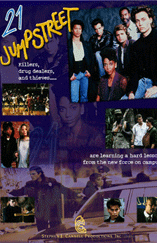

DVD Releases
Here you can find out more about DVD releaases of Cannell productions. Below you can read about each release and link directly to online retailers selling them.
21 Jump Street: 5th Season
Starring: George Peppard, Eddie Valez, Mr. T, Dwight Schultz,
Dirk Benedict, Melinda Culea, Robert Vaughn
21 JUMP STREET chronicles an elite unit of young police officers who adopt the speech, dress, and lifestyle of the days' high school and college students in order to infiltrate circles of criminal activity. The series deals with a myriad of critical issues ranging from drug abuse to child molestation.

21 Jump Street: 5th Season
Starring: George Peppard, Eddie Valez, Mr. T, Dwight Schultz,
Dirk Benedict, Melinda Culea, Robert Vaughn
21 JUMP STREET chronicles an elite unit of young police officers who adopt the speech, dress, and lifestyle of the days' high school and college students in order to infiltrate circles of criminal activity. The series deals with a myriad of critical issues ranging from drug abuse to child molestation.